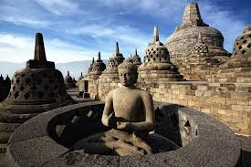

>> Wisata Di Indonesia <<
Candi Borobudur

Fasilitas: Toilet Bersih, Area Parkiran Luas, dan Restoran.
Wisata Borobudur di Magelang, Jawa Tengah, berpusat pada Candi Borobudur sebagai warisan budaya UNESCO dan candi Buddha terbesar di dunia. Selain menaiki candi, wisatawan dapat menikmati sunrise di Punthuk Setumbu, menjelajahi desa wisata, atau bermain di Borobudur Land.
Gunung Bromo

Fasilitas: Resort Hotel, Sewa Kuda, dan Restoran.
Tempat wisata di Gunung Bromo, Jawa Timur, menawarkan panorama alam ikonik di Taman Nasional Bromo Tengger Semeru. Destinasi utama meliputi spot matahari terbit, Kawah Bromo yang aktif, dan Pasir Berbisik.